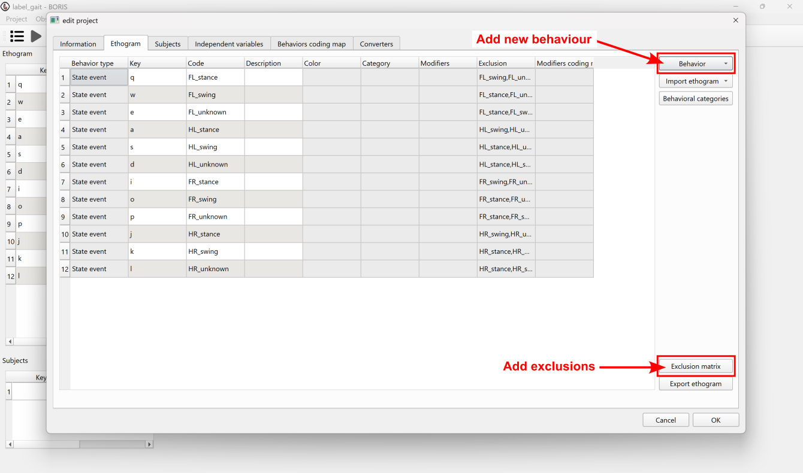
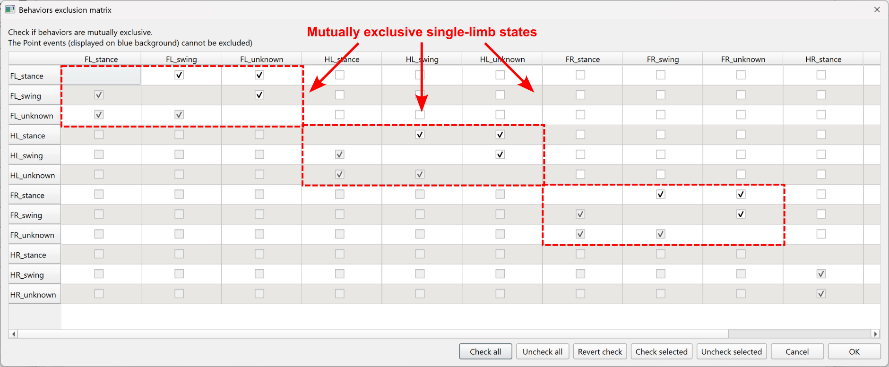
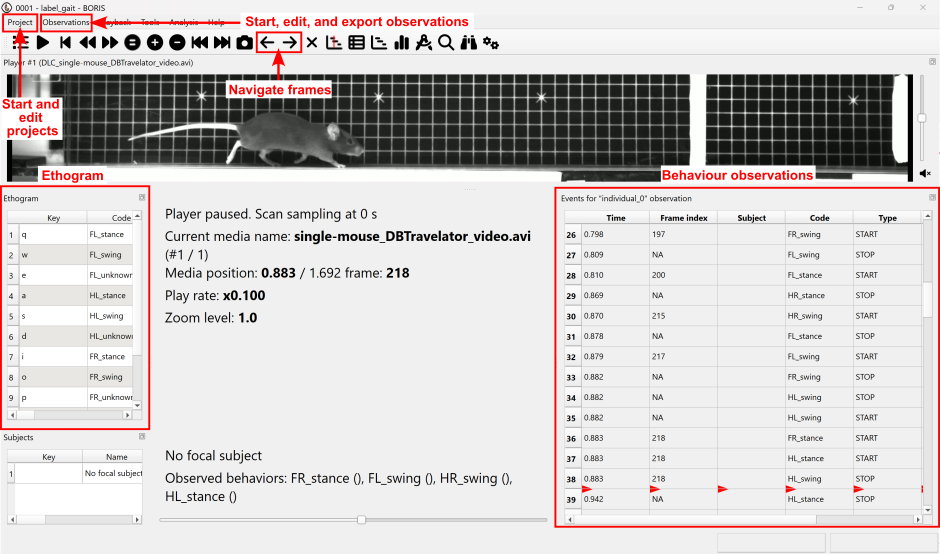
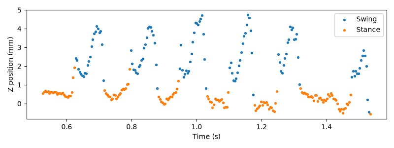
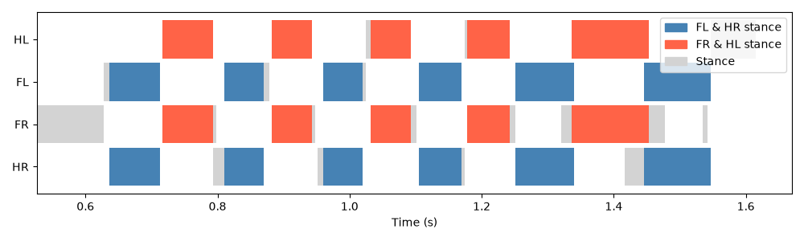
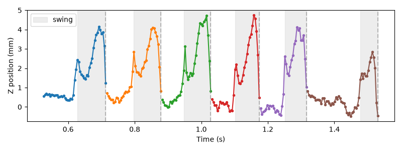
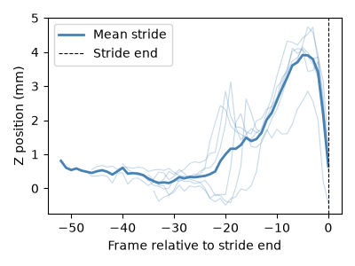

Note
Go to the end to download the full example code or to run this example in your browser via Binder.
Annotate and load events with BORIS#
Manually annotate events in BORIS and load them into a
movement dataset as per-frame labels.
Acknowledgements
This example was originally contributed by Holly Morley—a PhD student at the Sainsbury Wellcome Centre studying sensory-guided predictive movements in mice—and uses data she collected for her PhD project.
Overview#
This example demonstrates how to label events using
BORIS (Behavioural Observation Research Interactive Software) and load them into a
movement-compatible format for downstream analysis.
Specifically, we will be annotating gait phases in this example. Gait phase describes whether each limb is in stance (in contact with the ground), swing (in the air), or unknown (e.g. when the limb is off-screen or occluded). Like many events of interest, gait phase can be hard to detect reliably from the pose tracking data using simple thresholds alone, so here we label it by eye from the video. These manual annotations can then be used directly for analysis, or used as training data for supervised behavioural classification models, which can scale the analysis to larger datasets.
We will use the DLC_single-mouse_DBTravelator_3D
dataset. This contains 3D pose estimates of the limbs and body of a
single mouse locomoting on a dual-belt travelator, transitioning from one
belt onto a second faster belt.
Note
While this example focuses on gait phases, the workflow it
demonstrates—annotating events in BORIS and integrating them into
movement—generalises to any project that combines events
of interest (behavioural or otherwise) with tracking data.
Imports#
from pathlib import Path
import matplotlib.pyplot as plt
import numpy as np
import pandas as pd
import pooch
from matplotlib.patches import Patch
from movement import sample_data
from movement.filtering import filter_by_confidence
Load sample dataset and media#
First, let’s load the 3D pose dataset and separately download one of the source videos from which it was derived using pooch. We will use this video to manually annotate gait phase events in BORIS.
ds = sample_data.fetch_dataset(
"DLC_single-mouse_DBTravelator_3D.predictions.h5"
)
# Download the video
vid_name = "single-mouse_DBTravelator_video.avi"
video_path = pooch.retrieve(
url=(
f"https://gin.g-node.org/neuroinformatics/movement-test-data/raw"
f"/master/videos/{vid_name}"
),
known_hash=None,
fname=vid_name,
path=Path.home() / ".movement/data/videos",
)
We saved the video to our local movement cache directory here,
but feel free to modify the path in the pooch.retrieve call.
Either way, make a note of this path as you will need it to open the video in BORIS.
Annotate gait phase events in BORIS#
The following steps describe how to annotate gait phase events for four
limbs in the downloaded video, producing labels that we will later load
into the associated dataset ds. For a more complete guide, please refer
to the BORIS user guide.
Step 1: Install BORIS
Download and install BORIS from the BORIS website. Full installation instructions can be found in the BORIS installation guide.
Note
This example was created using BORIS v9.8.5. The steps described here may differ slightly for other versions.
Step 2: Create a new project
Open BORIS and create a new project via Project > New Project. In the dialogue that appears:
Set a Project name, e.g.
label_gait.Add a brief Project description.
Set Project time format to
seconds.
Step 3: Build the behaviour ethogram
Navigate to the Ethogram tab. An ethogram is a catalogue of all
events (or behaviours) to be annotated, where each event is assigned a
keyboard shortcut for fast labelling. Here, each event represents a gait
phase state for a single limb, e.g. the front-left paw in stance. The four
limbs are the front-left (FL), front-right (FR), hind-left (HL),
and hind-right (HR) paws. For each combination of limb and phase (
stance, swing, unknown), add a new behaviour:
Click Behaviour > Add new behaviour.
Under Behaviour type, select State event—a state event has a duration, defined by a start and end time, as opposed to a point event which is instantaneous.
Set the Code, e.g.
FL_stancefor front-left paw in stance.Assign a unique Key, e.g.
qforFL_stance.Repeat until all 12 behaviours (4 limbs × 3 phases) are defined.
{kind=link}

Because gait phase states cannot co-occur within a limb, we need to set exclusion criteria to define which behaviours are mutually exclusive. Open the Exclusion matrix and tick all mutually exclusive pairs (e.g.
FL_stancewithFL_swing). With this configured, starting a new state within a limb will automatically close the previous state for the same limb. Click OK.
{kind=link}

Now you have configured your project, click OK to close the project creation pop-up. You can always edit your project at a later stage via Project > Edit project. Before we move on to annotating our video, make sure to save the configured project via Project > Save project or Ctrl + S.
Step 4: Start an observation
Create a new observation via Observations > New observation:
Set an Observation ID, e.g.
0001.Tick Observation from media file(s).
Click Add media > with absolute path and navigate to the video file downloaded above at
video_path.Click Start.
Step 5: Annotate events
{kind=link}

Use the
←and→arrow keys or the upper panel buttons to step through the video frame-by-frame.The on-screen ethogram lists each event’s keyboard shortcut. As each event occurs across the video, press its assigned keyboard shortcut (e.g.
qfor the front-left paw in stance) at the frame where it begins. This opens the state event, recording its start.
Every open state event must also be closed. There are two ways to do this in BORIS:
Implicit closing: an open event is automatically closed when you start another event that is mutually exclusive with it, as defined by the exclusion matrix. For example, because we set the front-left paw’s phases as mutually exclusive, pressing the shortcut for its swing phase while
FL_stanceis open closesFL_stanceand opensFL_swingin one action. N.B. BORIS places this stop just before the frame where the new event begins (atnext_event_start - 0.001 s), so it falls between frames and its frame index is left empty (NA).Explicit closing: an open event is closed manually by pressing its own shortcut again, which stops it at the current frame (with the frame index filled in).
In this example, each limb is always in one of its phases (stance, swing, or unknown), with one beginning as the last ends, so we can use implicit closing to annotate almost the entire video. The only exception is the final phase of each limb, which has no following event to close it:
At the last frame of the video, press the shortcut of each still-open event again to close it explicitly.
Because the implicit stops fall between frames, run Observations > Add frame indexes before exporting to populate their empty frame indexes.
Note
If you were instead annotating isolated or non-contiguous state events
(e.g. groom for occasional bouts of grooming behaviours), you would
simply close every event explicitly. Note that in this case there is no
need to run Observations > Add frame indexes as all frames are
explicitly defined. Alternatively, if the events are instantaneous (
e.g. lick to mark the occurrence of a single lick), you could
define them as point events rather than state events (see Step
3): point events have no start and stop time and are instead recorded
at a single frame with a single keypress.
Make sure to save the project along with your new annotations via Project > Save project or Ctrl + S.
Step 6: Export the event data
Export the annotations via Observations > Export events > Aggregated events and save as a TSV (the default here, though you can choose CSV if you prefer).
Import BORIS event data into movement#
We will now load the exported TSV file into a pandas DataFrame. If you
have created your own annotations following
the steps above, replace gait_events_path with the path to your
exported TSV file, e.g.:
gait_events_path = "/your/path/to/aggregated.tsv"
Load the event data from TSV into a pandas Dataframe using
pandas.read_csv(). We pass sep="\t" because a TSV file separates
columns with tabs rather than commas (drop it if you exported a CSV).
df = pd.read_csv(gait_events_path, sep="\t")
show_columns = [
"Behaviour",
"Start (s)",
"Stop (s)",
"Image index start",
"Image index stop",
]
print("Key columns from the BORIS file:")
print(df[show_columns].head(10))
Key columns from the BORIS file:
Behaviour Start (s) Stop (s) Image index start Image index stop
0 FL_unknown 0.000 0.627 0 155
1 HL_unknown 0.000 0.716 0 177
2 FR_unknown 0.000 0.525 0 130
3 HR_unknown 0.000 0.635 0 157
4 FR_stance 0.526 0.627 130 155
5 FL_stance 0.628 0.712 155 176
6 FR_swing 0.628 0.716 155 177
7 HR_stance 0.636 0.712 157 176
8 FL_swing 0.713 0.809 176 200
9 HR_swing 0.713 0.793 176 196
Each row corresponds to a single annotated event, with columns for the behaviour code, start and stop times (in seconds), and start and stop frame indices.
To attach these labels to ds as per-frame gait phase labels, we first
reformat the event data: we split each behaviour code into separate
limb and state columns, and copy across the corresponding start
and stop frame indices.
Parsed events:
limb state start_frame stop_frame
0 FL unknown 0 155
1 HL unknown 0 177
2 FR unknown 0 130
3 HR unknown 0 157
4 FR stance 130 155
5 FL stance 155 176
6 FR swing 155 177
7 HR stance 157 176
8 FL swing 176 200
9 HR swing 176 196
Note that consecutive events for the same limb share a boundary frame in
the BORIS export (e.g. FR_stance ends at frame 155 and FR_swing
starts at frame 155). We will therefore treat each event as a half-open
interval [start_frame, stop_frame), which naturally assigns each
shared frame to the next event and avoids double-counting.
The final event per limb has no successor, so we extend its stop_frame
by 1 to make sure its actual last frame is still included.
events.loc[events.groupby("limb")["stop_frame"].idxmax(), "stop_frame"] += 1
Each row in events defines a phase label over a range of frames rather
than for a single frame. We therefore expand this into a per-frame
representation, initialising a 2-D array of shape (n_frames, n_limbs)
with NaN and filling each interval with the corresponding phase label.
The NaN initial values act as a fallback for any frames not covered
by an annotated event. Every frame is covered in this example but this
keeps the approach robust to partial annotations in other cases.
phase_data = np.full((ds.time.size, len(limbs)), np.nan, dtype=object)
for limb_idx, limb in enumerate(limbs):
limb_events = events[events["limb"] == limb]
for _, ev in limb_events.iterrows():
start, stop = ev["start_frame"], ev["stop_frame"]
phase_data[start:stop, limb_idx] = ev["state"]
print(
f"10 sample frames from phase_data (shape: n_frames, n_limbs):\n"
f"{phase_data[210:220]}"
)
10 sample frames from phase_data (shape: n_frames, n_limbs):
[['stance' 'swing' 'swing' 'stance']
['stance' 'swing' 'swing' 'stance']
['stance' 'swing' 'swing' 'stance']
['stance' 'swing' 'swing' 'stance']
['stance' 'swing' 'swing' 'stance']
['stance' 'swing' 'swing' 'swing']
['stance' 'swing' 'swing' 'swing']
['swing' 'swing' 'swing' 'swing']
['swing' 'stance' 'stance' 'swing']
['swing' 'stance' 'stance' 'swing']]
A caveat on BORIS stop times at high frame rates
You may recall from Step 5 that BORIS subtracts 1 ms from the stop time
of each implicitly closed event. For video frame rates below ~500 fps,
this small difference is rounded out when the empty frame indices are
filled in (via Observations > Add frame indexes), so consecutive
events stay contiguous. At higher frame rates it may instead leave an
unlabelled one-frame gap (here a NaN) between events that should be
back-to-back.
This does not affect our approach here, which is robust to NaN gaps,
but is worth being aware of.
Before attaching the labels, let’s inspect ds.
print(ds)
<xarray.Dataset> Size: 675kB
Dimensions: (time: 418, space: 3, keypoint: 50, individual: 1)
Coordinates:
* time (time) float64 3kB 0.0 0.004049 0.008097 ... 1.68 1.684 1.688
* space (space) <U1 12B 'x' 'y' 'z'
* keypoint (keypoint) <U15 3kB 'StartPlatL' 'StepL' ... 'HindpawKneeL'
* individual (individual) <U12 48B 'individual_0'
Data variables:
position (time, space, keypoint, individual) float64 502kB -1.403 ... 0.0
confidence (time, keypoint, individual) float64 167kB 1.0 1.0 ... 0.0002036
Attributes:
source_software: DeepLabCut
ds_type: poses
fps: 247.0
time_unit: seconds
source_file: /home/runner/.movement/data/poses/DLC_single-mouse_DBTr...
The dataset currently has four dimension coordinates—time,
space, keypoint, and individual—but no information about
gait phase. See Dataset structure for a refresher on the
structure of a movement dataset.
We want to attach the gait phase labels along the existing time
dimension. So far, time has only one set of labels along it—the
seconds of each frame—which shares the dimension’s name and is therefore
called a “dimension coordinate” (these are the entries marked with a *
in the printout above). xarray also lets us attach additional sets of
labels along the same dimension under different names; these are called
non-dimension coordinates.
We use xarray.Dataset.assign_coords() to attach one non-dimension
coordinate per limb on the time dimension, named gait_<limb>,
holding the per-frame gait phase label for that limb. This will allow us
to select data by gait phase in the next section.
for limb_idx, limb in enumerate(limbs):
ds = ds.assign_coords({f"gait_{limb}": ("time", phase_data[:, limb_idx])})
print(ds)
<xarray.Dataset> Size: 689kB
Dimensions: (time: 418, space: 3, keypoint: 50, individual: 1)
Coordinates:
* time (time) float64 3kB 0.0 0.004049 0.008097 ... 1.68 1.684 1.688
gait_FL (time) object 3kB 'unknown' 'unknown' ... 'unknown' 'unknown'
gait_FR (time) object 3kB 'unknown' 'unknown' ... 'unknown' 'unknown'
gait_HL (time) object 3kB 'unknown' 'unknown' ... 'unknown' 'unknown'
gait_HR (time) object 3kB 'unknown' 'unknown' ... 'unknown' 'unknown'
* space (space) <U1 12B 'x' 'y' 'z'
* keypoint (keypoint) <U15 3kB 'StartPlatL' 'StepL' ... 'HindpawKneeL'
* individual (individual) <U12 48B 'individual_0'
Data variables:
position (time, space, keypoint, individual) float64 502kB -1.403 ... 0.0
confidence (time, keypoint, individual) float64 167kB 1.0 1.0 ... 0.0002036
Attributes:
source_software: DeepLabCut
ds_type: poses
fps: 247.0
time_unit: seconds
source_file: /home/runner/.movement/data/poses/DLC_single-mouse_DBTr...
We now have four new coordinates on the time dimension, appearing
without a *.
Select data by gait phase#
With the gait phase coordinates in place, we can now select subsets of
ds by gait phase. Comparing a gait_<limb> coordinate against a
phase label produces a boolean mask that is True for matching frames
and False elsewhere. Passing this mask to
sel() keeps only the matching timepoints. For
example, to select all timepoints where the front-right paw is in stance:
mask = ds.gait_FR == "stance"
ds_fr_stance = ds.position.sel(time=mask)
print(ds_fr_stance)
<xarray.DataArray 'position' (time: 137, space: 3, keypoint: 50, individual: 1)> Size: 164kB
-0.7868 0.009323 -0.7108 -0.377 0.0 470.7 ... 11.39 17.04 1.525 2.343 0.0 18.4
Coordinates:
* time (time) float64 1kB 0.5263 0.5304 0.5344 ... 1.474 1.534 1.538
gait_FL (time) object 1kB 'unknown' 'unknown' ... 'stance' 'stance'
gait_FR (time) object 1kB 'stance' 'stance' ... 'stance' 'stance'
gait_HL (time) object 1kB 'unknown' 'unknown' ... 'swing' 'swing'
gait_HR (time) object 1kB 'unknown' 'unknown' ... 'stance' 'stance'
* space (space) <U1 12B 'x' 'y' 'z'
* keypoint (keypoint) <U15 3kB 'StartPlatL' 'StepL' ... 'HindpawKneeL'
* individual (individual) <U12 48B 'individual_0'
Notice the size of the time dimension is now reduced to 137 data points.
As a sanity check, we can now visualise the z-position (height) of the mouse’s right forepaw, colour-coded by gait phase. We would expect the paw to be elevated during swing and near the belt surface (z=0) during stance.
# First, we filter the pose data by confidence
ds["position"] = filter_by_confidence(
ds.position,
ds.confidence,
threshold=0.9,
)
# Select the z-position of the right forepaw toe
fr_z = ds.position.sel(keypoint="ForepawToeR", space="z")
# Select frames by gait phase using the gait_FR coordinate
fr_swing = fr_z.sel(time=ds.gait_FR == "swing")
fr_stance = fr_z.sel(time=ds.gait_FR == "stance")
fig, ax = plt.subplots(figsize=(8, 3))
ax.scatter(fr_swing.time, fr_swing.values, s=8, label="Swing")
ax.scatter(fr_stance.time, fr_stance.values, s=8, label="Stance")
ax.set_xlabel("Time (s)")
ax.set_ylabel("Z position (mm)")
ax.legend()
plt.tight_layout()
plt.show()

Indeed, we see a clear separation between swing and stance phases, with the paw elevated during swing and near the belt surface during stance. Note, however, that the toe’s z-value at the end of some stance phases can exceed that of some swing frames—likely reflecting subtle tracking inconsistencies that depend on the paw’s pose. This illustrates why a simple threshold-based approach may not always be sufficient for tasks like gait phase detection.
Next, to select frames where multiple conditions hold simultaneously, we can
also combine any number of boolean masks across limb coordinates using &.
# Create a boolean mask for each limb in stance
fl_stance = ds["gait_FL"] == "stance"
fr_stance = ds["gait_FR"] == "stance"
hl_stance = ds["gait_HL"] == "stance"
hr_stance = ds["gait_HR"] == "stance"
# Select frames where all four limbs are simultaneously in stance
all_stance = ds.position.sel(
time=fl_stance & fr_stance & hl_stance & hr_stance
)
print(all_stance)
<xarray.DataArray 'position' (time: 3, space: 3, keypoint: 50, individual: 1)> Size: 4kB
-0.8506 -0.3681 -0.3983 -0.1385 nan 470.3 ... 14.85 -0.4401 4.266 11.73 14.0
Coordinates:
* time (time) float64 24B 1.336 1.445 1.449
gait_FL (time) object 24B 'stance' 'stance' 'stance'
gait_FR (time) object 24B 'stance' 'stance' 'stance'
gait_HL (time) object 24B 'stance' 'stance' 'stance'
gait_HR (time) object 24B 'stance' 'stance' 'stance'
* space (space) <U1 12B 'x' 'y' 'z'
* keypoint (keypoint) <U15 3kB 'StartPlatL' 'StepL' ... 'HindpawKneeL'
* individual (individual) <U12 48B 'individual_0'
Attributes:
log: [\n {\n "operation": "filter_by_confidence",\n "datetime...
Here we see that there are very few frames in which all four limbs are simultaneously in stance, as expected during continuous locomotion.
We can use the same approach to identify frames in which diagonal limb pairs are simultaneously in stance. When mice locomote at intermediate speeds, they typically display a trotting gait, in which diagonal limb pairs (e.g. front-left and hind-right) move in synchrony. We might therefore expect stance phases to overlap within each diagonal pair in our dataset. Here we plot the stance phase of each limb, highlighting frames where both limbs of a diagonal pair are simultaneously in stance.
fig, ax = plt.subplots(figsize=(10, 3))
limbs_ordered = ["HL", "FL", "FR", "HR"]
fl_hr_stance = (ds["gait_FL"] == "stance") & (ds["gait_HR"] == "stance")
fr_hl_stance = (ds["gait_FR"] == "stance") & (ds["gait_HL"] == "stance")
frame_duration = 1 / ds.fps
for i, limb in enumerate(limbs_ordered):
# Pick a diagonal pair mask and colour for this limb
if limb in {"FL", "HR"}:
diagonal_mask, diagonal_color = fl_hr_stance, "steelblue"
else:
diagonal_mask, diagonal_color = fr_hl_stance, "tomato"
# Find the single limb stance phase frames
stance_mask = ds[f"gait_{limb}"] == "stance"
# Frames where the diagonal partner is also in stance
diag_times = ds.time.sel(time=stance_mask & diagonal_mask).values
ax.barh(
i,
frame_duration,
left=diag_times,
height=0.9,
color=diagonal_color,
edgecolor="none",
)
# Remaining stance frames
solo_times = ds.time.sel(time=stance_mask & ~diagonal_mask).values
ax.barh(
i,
frame_duration,
left=solo_times,
height=0.9,
color="lightgrey",
edgecolor="none",
)
ax.set_yticks(range(len(limbs_ordered)))
ax.set_yticklabels(limbs_ordered)
ax.set_xlabel("Time (s)")
ax.invert_yaxis()
# Plot legend
handles = [
Patch(color="steelblue", label="FL & HR stance"),
Patch(color="tomato", label="FR & HL stance"),
Patch(color="lightgrey", label="Stance"),
]
ax.legend(handles=handles, loc="upper right")
plt.tight_layout()
plt.show()

As expected, stance phases largely overlap within diagonal pairs—when the front-left limb is in stance, the hind-right limb tends to be too, and vice versa for front-right and hind-left, confirming that the mouse is locomoting with a trotting gait.
isin() can also be used to select frames where
a limb is in any one of multiple phases at once. For example, to retain
only frames where the front-right limb phase was confidently identified
(i.e. excluding "unknown"):
fr_visible = ds.position.sel(time=ds.gait_FR.isin(["stance", "swing"]))
print(fr_visible)
<xarray.DataArray 'position' (time: 251, space: 3, keypoint: 50, individual: 1)> Size: 301kB
-0.7868 0.009323 -0.7108 -0.377 nan 470.7 ... 11.39 17.04 1.525 2.343 nan 18.4
Coordinates:
* time (time) float64 2kB 0.5263 0.5304 0.5344 ... 1.53 1.534 1.538
gait_FL (time) object 2kB 'unknown' 'unknown' ... 'stance' 'stance'
gait_FR (time) object 2kB 'stance' 'stance' ... 'stance' 'stance'
gait_HL (time) object 2kB 'unknown' 'unknown' ... 'swing' 'swing'
gait_HR (time) object 2kB 'unknown' 'unknown' ... 'stance' 'stance'
* space (space) <U1 12B 'x' 'y' 'z'
* keypoint (keypoint) <U15 3kB 'StartPlatL' 'StepL' ... 'HindpawKneeL'
* individual (individual) <U12 48B 'individual_0'
Attributes:
log: [\n {\n "operation": "filter_by_confidence",\n "datetime...
Segment data by stride#
Building on the per-frame gait phase labels we have just attached, we can
perform a second ‘level’ of labelling frames by grouping consecutive
stance-swing cycles into individual strides. We define a stride as one
complete stance-swing sequence for a chosen reference limb, and assign a
stride index to each frame as an additional non-dimension coordinate on the
time dimension. Frames outside of a complete stride cycle are left as
NaN.
First, we define a helper function to find the start and end frame indices of contiguous blocks of a given phase label in a coordinate array.
def find_phase_blocks(phase_coord, phase_label):
"""Find start and end frame indices of contiguous blocks of a given phase.
Parameters
----------
phase_coord : np.ndarray
Array of phase labels for each frame.
phase_label : str
The phase label to find blocks of.
Returns
-------
list of tuple
List of (start, end) frame index pairs for each contiguous block.
"""
is_phase = (phase_coord == phase_label).astype(int)
transitions = np.diff(is_phase, prepend=0, append=0)
starts = np.where(transitions == 1)[0]
ends = np.where(transitions == -1)[0]
return list(zip(starts, ends, strict=True))
Using the gait_FR coordinate already attached to the time
dimension, we find all contiguous stance and swing blocks for the
front-right limb, then pair each stance block with the immediately
following swing block to form a complete stride.
# Get the gait phase labels for the front-right limb
gait_coord = ds.gait_FR.values
# Find contiguous blocks of stance and swing phases
stance_blocks = find_phase_blocks(gait_coord, "stance")
swing_blocks = find_phase_blocks(gait_coord, "swing")
stride_data = np.full(ds.time.size, np.nan)
swing_lookup = dict(swing_blocks) # {start_frame: end_frame}
stride_idx = 0
for stance_start, stance_end in stance_blocks:
# If a swing block starts immediately after this stance block, label all
# frames from stance onset to swing offset with the stride index
if stance_end in swing_lookup:
swing_end = swing_lookup[stance_end]
stride_data[stance_start:swing_end] = stride_idx
stride_idx += 1
# Attach the stride index as a non-dimension coordinate on the time dimension
ds = ds.assign_coords(stride_FR=("time", stride_data))
print(ds.isel(time=np.arange(150, 350)))
<xarray.Dataset> Size: 333kB
Dimensions: (time: 200, space: 3, keypoint: 50, individual: 1)
Coordinates:
* time (time) float64 2kB 0.6073 0.6113 0.6154 ... 1.405 1.409 1.413
gait_FL (time) object 2kB 'unknown' 'unknown' ... 'swing' 'swing'
gait_FR (time) object 2kB 'stance' 'stance' ... 'stance' 'stance'
gait_HL (time) object 2kB 'unknown' 'unknown' ... 'stance' 'stance'
gait_HR (time) object 2kB 'unknown' 'unknown' ... 'swing' 'swing'
stride_FR (time) float64 2kB 0.0 0.0 0.0 0.0 0.0 ... 5.0 5.0 5.0 5.0 5.0
* space (space) <U1 12B 'x' 'y' 'z'
* keypoint (keypoint) <U15 3kB 'StartPlatL' 'StepL' ... 'HindpawKneeL'
* individual (individual) <U12 48B 'individual_0'
Data variables:
position (time, space, keypoint, individual) float64 240kB -0.5062 ......
confidence (time, keypoint, individual) float64 80kB 1.0 1.0 ... 0.945
Attributes:
source_software: DeepLabCut
ds_type: poses
fps: 247.0
time_unit: seconds
source_file: /home/runner/.movement/data/poses/DLC_single-mouse_DBTr...
We now have a new non-dimension coordinate on time called
stride_FR, containing the stride index each frame belongs to (0, 1, 2,
…).
We can now select data by stride index in the same way as with gait phase. To visualise the segmentation, we plot the z-position of the front-right limb for each stride as a separate coloured line, with swing phase shown by shaded boxes. Dashed vertical lines mark the boundaries between consecutive strides.
fr = ds.position.sel(keypoint="ForepawToeR", space="z")
fig, ax = plt.subplots(figsize=(8, 3))
n_strides = int(np.nanmax(fr.stride_FR.values)) + 1
# Plot each stride trajectory
for i in range(n_strides):
stride = fr.sel(time=fr.stride_FR == i)
ax.plot(stride.time, stride.values.squeeze(), linewidth=1.5, zorder=100)
ax.scatter(stride.time, stride.values.squeeze(), s=8, zorder=100)
# Shade swing phases (reusing swing_blocks computed above)
for j, (swing_start, swing_end) in enumerate(swing_blocks):
ax.axvspan(
fr.time.values[swing_start],
fr.time.values[swing_end - 1],
alpha=0.4,
zorder=1,
color="lightgrey",
label="swing" if j == 0 else None,
)
# Draw stride boundary lines using the new stride_FR coordinate
for i in range(n_strides):
stride_end = fr.sel(time=fr.stride_FR == i).time.values[-1]
ax.axvline(
stride_end,
color="grey",
linestyle="--",
alpha=0.5,
zorder=200,
)
ax.set_xlabel("Time (s)")
ax.set_ylabel("Z position (mm)")
ax.legend()
plt.tight_layout()
plt.show()

We can select data by stride index to compare the paw trajectories across strides. Here we align each front-right limb stride by its end frame and plot the mean trajectory alongside individual strides.
# Extract each stride into a list
strides = []
for i in range(n_strides):
stride = fr.sel(time=fr.stride_FR == i).values.squeeze()
strides.append(stride)
# Right-align each stride into a fixed-width array, padding the start with NaN
max_len = max(len(s) for s in strides)
stride_array = np.full((n_strides, max_len), np.nan)
for i, s in enumerate(strides):
stride_array[i, max_len - len(s) :] = s
frame_indices = np.arange(max_len) - (max_len - 1)
mean_stride = np.nanmean(stride_array, axis=0)
fig, ax = plt.subplots(figsize=(4, 3))
for i in range(n_strides):
ax.plot(
frame_indices,
stride_array[i],
color="steelblue",
alpha=0.3,
linewidth=0.8,
)
ax.plot(
frame_indices,
mean_stride,
color="steelblue",
linewidth=2,
label="Mean stride",
)
ax.axvline(0, color="k", linestyle="--", linewidth=0.8, label="Stride end")
ax.set_xlabel("Frame relative to stride end")
ax.set_ylabel("Z position (mm)")
ax.legend()
plt.tight_layout()
plt.show()

Total running time of the script: (0 minutes 0.462 seconds)